לאפליקציה יש בסיס עיצובי טוב יותר מרוב האפליקציות האישיות. יש לה שפה מוגדרת ("כיס"): RTL טבעי, הפרדה נכונה בין ₪ ל-$, כרטיסי משמרת עם אות וצבע לכל מקום, וניווט צף פשוט. בין האנדרואיד לווב יש התאמה גבוהה, ו-axe כמעט לא מצא הפרות בווב. הבעיה היא לא חוסר בכיוון. הבעיה היא שחיקה: כל תיקון נקודתי הוסיף עוד ערך קשיח, עוד סגנון "נבחר", עוד גודל גופן. התוצאה נראית "כמעט מלוטשת", אבל לא כמו עבודה של צוות אחד.
הציונים הם הערכה מקצועית שלי ולא מדד אובייקטיבי. הם נועדו להראות איפה הפער הכי גדול.
הבדיקה נעשתה על הטוקנים (KisTheme.kt, kis.css), על מפקד צבעים מחושב מכל אלמנט גלוי ב-70 מסכים לכל תמה, ועל מטריצת ניגודיות של 148 זוגות.
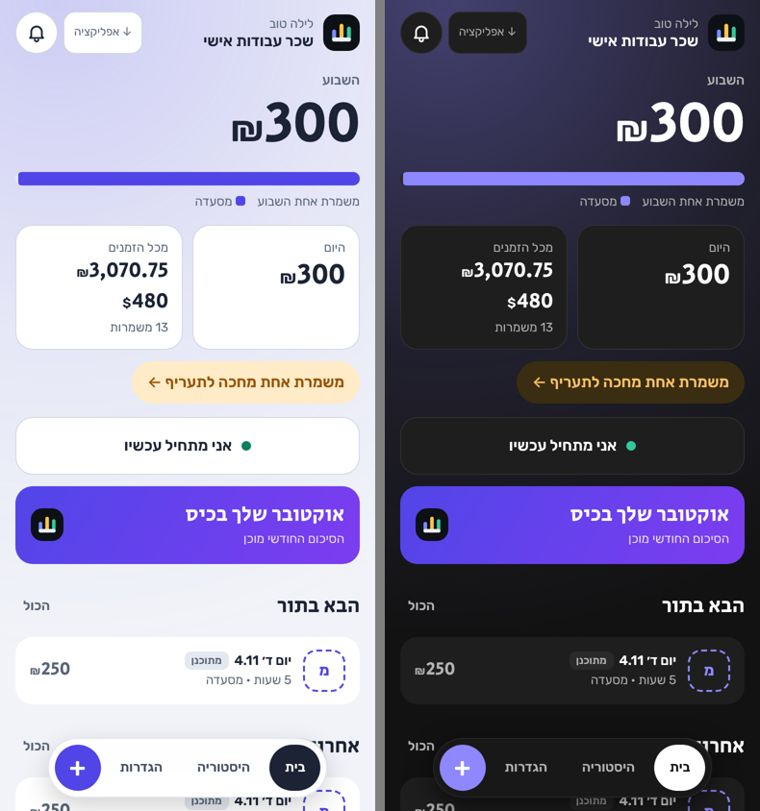
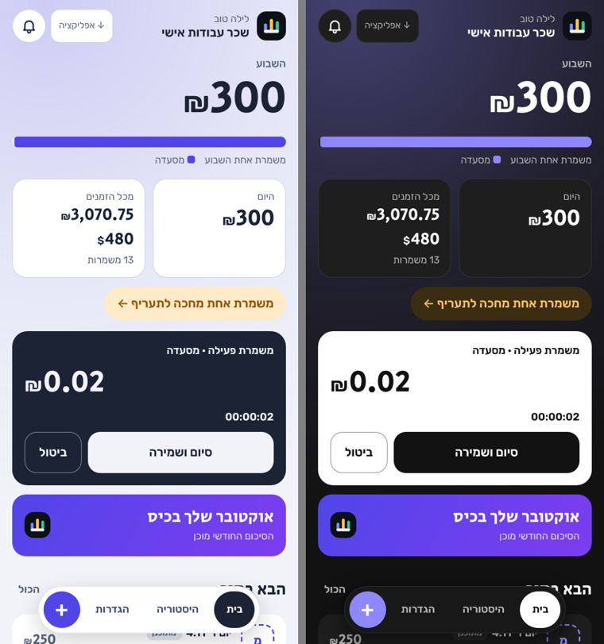
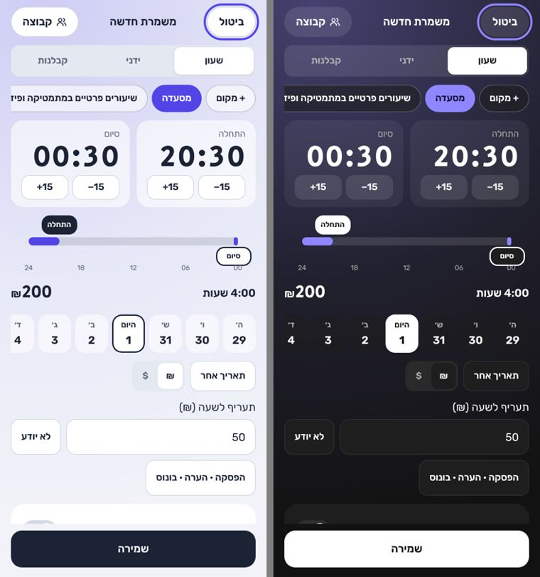
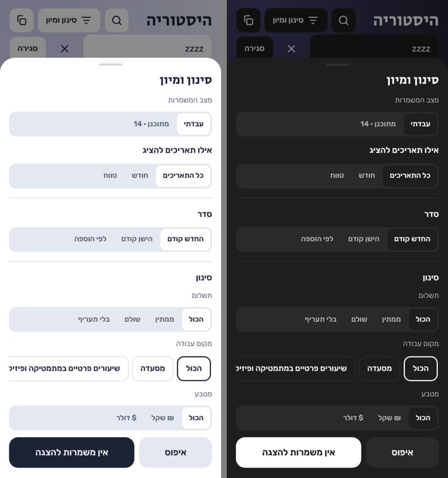
העיקרון: לשמור על הזהות הקיימת (דיו נייבי לפעולות, אינדיגו כמותג, צבע לכל מקום עבודה), ולבנות את הכהה מאותה משפחת גוון (264) ברוויה נמוכה מאוד, כדי שיקרא כ"אותו מוצר בלילה" ולא כאפליקציה אחרת. ערכי הבהיר שכבר עובדים נשארים כמעט כמו שהם, כך שבבהיר השינוי כמעט לא ייראה.
| טוקן | תפקיד | היום, בהיר | היום, כהה | מוצע (בהיר / כהה) |
|---|---|---|---|---|
| bg | רקע הדף | #F1F3F8 | #121212 | #0F1216 |
| surface | כרטיס | #FFFFFF | #1E1E1E | #181B20 |
| surfaceRaised | גיליון, ניווט | #FFFFFF | #1E1E1E / #181818 | #21252B |
| fill (במקום sunk) | כפתור משני, מסילה, שדה | #E4E8F0 | #2A2A2A | #282C34 |
| line | קו מפריד (קישוטי בלבד) | #D2D8E3 | #303030 | #32373F |
| lineStrong | מסגרת שהיא הסימן היחיד של פקד | — (אין) | — (אין) | #778093 / #717681 |
| ink | טקסט ראשי | #1B2335 | #FFFFFF | #EDF0F6 |
| ink2 | טקסט משני | #5A6478 | #B3B3B3 | #B3B9C5 |
| ink3 | מטא, placeholder | — | — | #636C7E / #959CA8 |
| accent | מותג (+, זוהר, פוקוס) | #5145E8 | #8F87FF | #5145E8 / #9398FF |
| accentInk | טקסט על המותג | #FFFFFF | #FFFFFF (2.97!) | #FFFFFF / #15153A |
| success | שולם | #0B7F60 | #34C79A | #007453 / #45D09E |
| warning | ממתין לתעריף | #9A5000 | #FFC266 | #9A5201 / #F6B75C |
| danger | מחיקה, שגיאה | #C2362B | #FF8A7A | #BD2F28 / #FF9183 |
| onDanger | טקסט על אדום | #FFFFFF | #FFFFFF (2.29!) | #FFFFFF / #2B0E0B |
| selectedBg/Edge | נבחר: אותו מתכון בשתי הערכות | לבן + מסגרת כהה | לבן מלא / כהה (סותר) | #FFFFFF+#1B2335 / #424853+#EDF0F6 |
| controlOn | מתג דולק | ירוק כסף | ירוק כסף | #1B2335 / #EDF0F6 |
| live | כרטיס משמרת חיה | #1B2335 | #FFFFFF (משטח לבן) | #1B2335 / #2D323A |
| glow | זוהר עליון (שקיפות) | .22 | .40 | .12 / .24 |
הסדר והשמות לא משתנים, כך שאינדקס הצבע השמור לכל מקום נשאר נכון ואין צורך בהמרת נתונים. החרדל נשאר זהה. כל צבע זז רק בתוך משפחת הגוון שלו, ובזוגות הקרובים נעזרים גם בבהירות. הזוג הכי קשה להבחנה (כולל סימולציה של שלושה סוגי עיוורון צבעים) עולה מ-ΔE 1.4 ל-8.5 בבהיר, ומ-0.7 ל-8.7 בכהה. זו בערך התקרה עם שמונה גוונים ששלושה מהם סגלגלים, ולכן האות והשם חייבים להישאר הסימן העיקרי.
| מקום | היום, בהיר | מוצע, בהיר | היום, כהה | מוצע, כהה |
|---|---|---|---|---|
| אינדיגו | #5145E8 | #393ECA | #8F87FF | #7D9BFF |
| ירוק | #0E8059 | #117D15 | #3DDC97 | #44E994 |
| ורד | #D6336C | #C50E70 | #FF6B9A | #FA74A5 |
| חרדל | #F5B82E | #F5B82E | #FFC94D | #FFC732 |
| סגול | #7D3CF0 | #9F4AE4 | #B48CFF | #C874C8 |
| תכלת | #1F72E0 | #0777A9 | #5AA9FF | #8BC7FE |
| טורקיז | #0E8A86 | #065E63 | #3CD3CB | #18AFA4 |
| בורדו | #B5294E | #8B032A | #FF6F8E | #F05963 |
שלושה דברים צריך לבדוק בעין על הטלפון: הירוק הופך ל"ירוק עלה" נקי יותר, הסגול בכהה נוטה לסחלבי, והבורדו בכהה נראה אדום. ההחלטה על כפתור השמירה בכהה פתוחה: #EDF0F6, או אינדיגו אם עדיין יהיה בולט מדי.
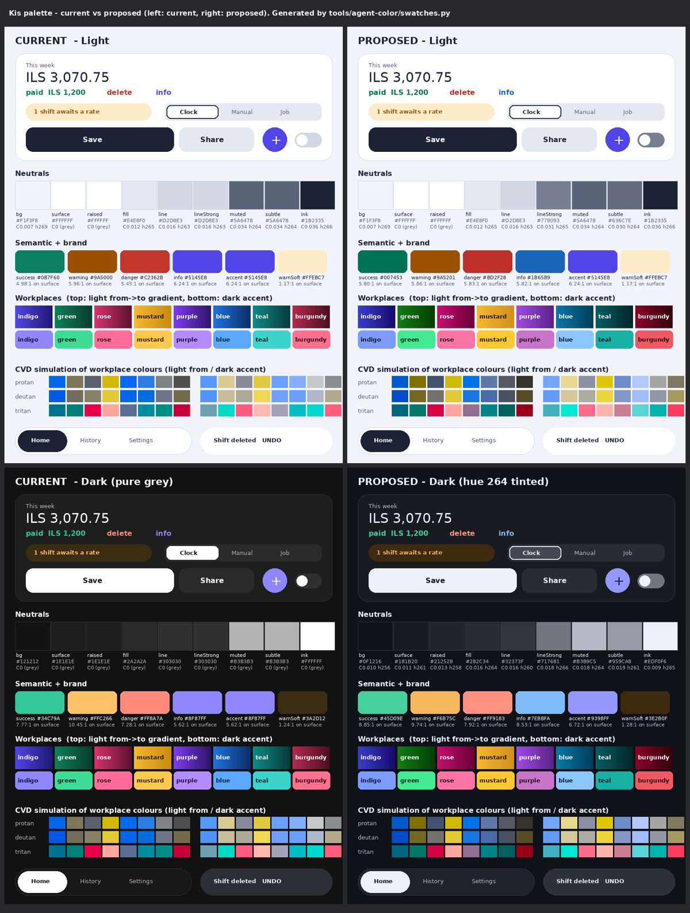
הערכים המלאים (כ-CSS ו-Kotlin) נמצאים ב-ux-audit/tools/agent-color/out/kis-tokens.css וב-KisTokens.kt. הניתוח המלא ב-ux-audit/notes/agent-color.md.
| מועמד | התרשמות | ספרות | הכרעה |
|---|---|---|---|
| Rubik + Secular One (היום) | חם וידידותי, אבל עגול ולא רשמי. משקל אחד לכותרות | ברוחב משתנה, אין tnum ב-Secular | להחליף |
| Heebo בלבד (variable 100–900) | ניטרלי, בוגר, מודרני. החלק הלטיני שלו הוא Roboto, כך שהוא מרגיש טבעי באנדרואיד | ברוחב אחיד כברירת מחדל. ₪ מאותו עיצוב כמו הספרות | המלצה |
| IBM Plex Sans Hebrew | המוסדי ביותר, רציני מאוד | רחבות. ₪ בולט מדי. קבצים סטטיים בלבד | חלופה שנייה |
| Noto Sans Hebrew | נקי וגנרי | טובות | סביר, פחות אופי |
| Assistant | אלגנטי ודק | אין tnum, "1" צר מהשאר | נפסל לסכומים |
| Heebo + Rubik לכותרות | משאיר את העגלגלות | — | לא פותר |
| Heebo + Frank Ruhl Libre | נראה כמו עיתון, חלש בגדלים קטנים | — | לא מתאים לאפליקציה |
Heebo כבר נמצא בפרויקט, ברישיון OFL. בגרסת woff2 של עברית ולטינית הוא כ-40KB (במקום כ-1MB). המשמעות: גופן אחד, ספרות שלא קופצות, ו-₪ שמתיישב עם הספרות. המראה בוגר ואמין יותר, ועדיין חם. לפריטי "כרזה" (מסך פתיחה וסיכום חודשי) משתמשים ב-Heebo 800, מחוץ לסולם.
| טוקן | גודל/גובה שורה | משקל | ריווח | שימוש |
|---|---|---|---|---|
| hero | 52/56 | 700 | −0.02em | סכום השבוע, שעון חי, סכום בפרטים |
| page | 28/34 | 700 | −0.01em | כותרת דף |
| amount | 24/30 | 600 | — | סכומים בכרטיסים |
| title | 20/26 | 700 | — | כותרת קטע, כותרת גיליון |
| body | 16/24 | 400 / 600 | — | טקסט רץ, כפתורים |
| label | 14/20 | 500 | — | צ׳יפים, ניווט, תוויות |
| caption | 13/18 | 400 | — | שורת משנה, הערות |
| micro | 11/14 | 500 | — | תגיות ("לא שולם", "מתוכנן") |
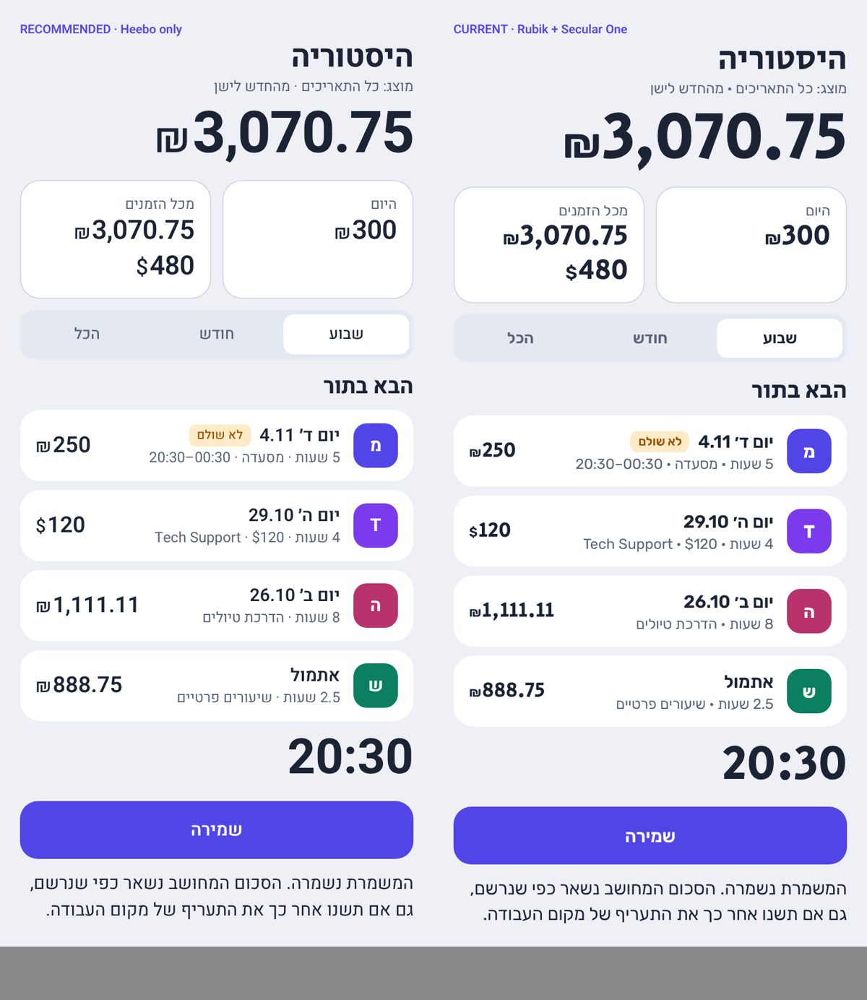
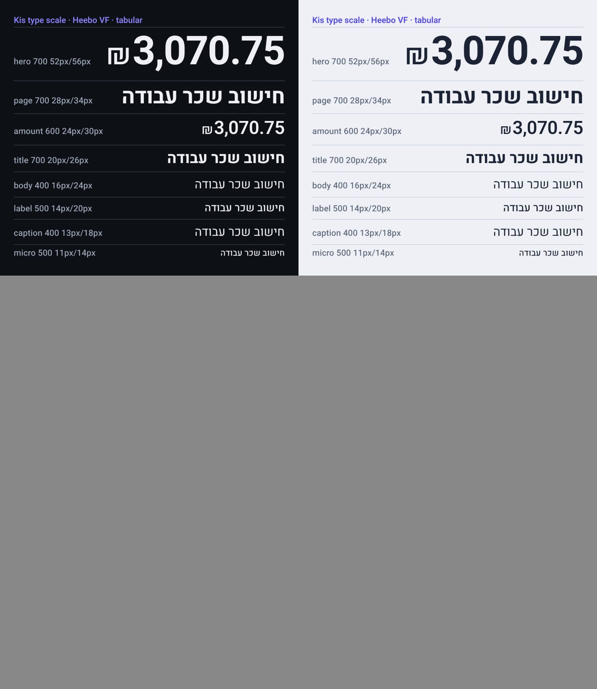
| רכיב | היום | מוצע |
|---|---|---|
| מצב "נבחר" | 11 דרכים (צ׳יפ מלא, לשונית מורמת, מסגרת דיו, לבן מלא, כהה מהמסילה, מתאר...) | שני דפוסים בלבד: אריח/צ׳יפ (משטח בהיר ומסגרת של 2px) ומקטע/לשונית (אותו מתכון בתוך מסילה). צ׳יפ מקום בצבע המקום. |
| כפתורים | 7 גבהים (באנדרואיד), ראשי, רוח, מתאר, סכנה, צ׳יפ-פעולה. סכנה רך באנדרואיד ומלא בווב | 3 גדלים: 56 / 48 / 40 (40 רק עם אזור מגע של 48). ארבעה סוגים: ראשי (דיו), משני (fill), מתאר (lineStrong), סכנה (מילוי danger עם onDanger) זהה בשתי הפלטפורמות. צ׳יפ פעולה מקבל אייקון חץ או נראה כקישור. |
| רדיוסים | 12 (ווב) / 19–20 (אנדרואיד) | 4 מדרגות: 8 (תגית), 12 (שדה, צ׳יפ, כפתור קטן), 16 (כפתור, כרטיס פנימי), 24 (כרטיס, גיליון), ועוד מלא (99) לגלולות |
| ריווח | ערכים קשיחים רבים, חלקם בתוך style | סולם 4: 4/8/12/16/24/32/48. ריווח בכרטיס 16, בין כרטיסים 12, בין קטעים 32 |
| אייקונים | SVG בקו 2 לצד תווי גופן (← ↓ ✓ ‹ ›). באנדרואיד שלושה סגנונות | סט SVG אחד, קו 1.75–2, גדלים 16/20/24, מראה מתאים ל-RTL לחצים. בלי תווי גופן כאייקונים |
| גיליונות | חלקם עם × וחלקם עם ידית בלבד. פוקוס אוטומטי לכפתור הראשון. 8 עותקים של גיליון אישור | מבנה אחד: ידית, כותרת, תוכן, ופעולות מוצמדות לתחתית. × רק בגיליונות ארוכים. רכיב אישור אחד |
| משוב | הודעה של האפליקציה, Toast של המערכת (כ-38), שגיאה בשורה, דיאלוג, כלום | הודעה אחת למעלה (עם ביטול של 8 שניות, ומוכרזת לקורא מסך), שגיאה בשורה ליד השדה, ודיאלוג רק לפעולה הרסנית |
| פורמטים | משך 4:00 / 2.5, תאריך 4.11 / 04/11/2026, מפרידים · ו-• | משך ש:דד, תאריך "יום ד׳ 4.11" (ובשנה אחרת 4.11.25), מפריד · |
ההיררכיה טובה: סכום השבוע גדול, ואחריו היום ומכל הזמנים. המשמרת המתוכננת כפולה, כרטיס "היום" ריק, ההודעה הכתומה ברוחב חצי, ובכהה באנר הסיכום צועק. במסך ריק "₪0" ענק במקום הזמנה להתחיל.
החלק החזק במוצר: מעט צעדים, יום, מקום ושעה במסך אחד. מצד שני יש ארבעה סגנונות "נבחר", סרגל לילה שקשה לקרוא, "קבוצה" ככפתור בכותרת, הודעות בניסוח "הזן"/"הוסף", וערכים שמשתנים בשקט. במצב קבוצה כל המסך מקבל מסגרת אינדיגו, צבע שהוא גם מקום עבודה.
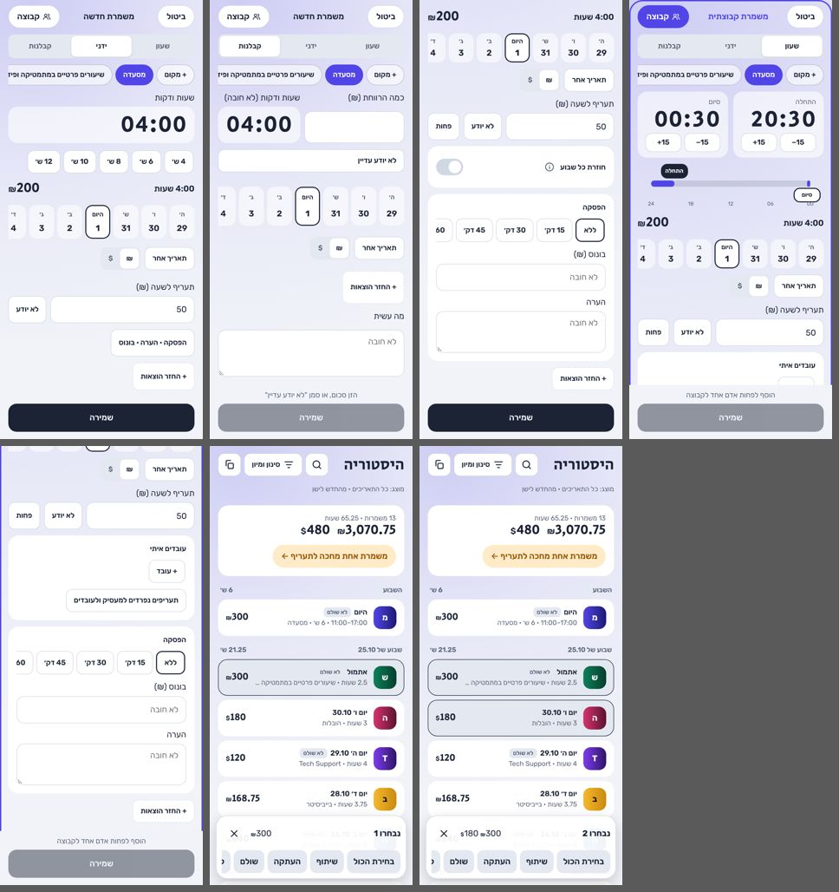
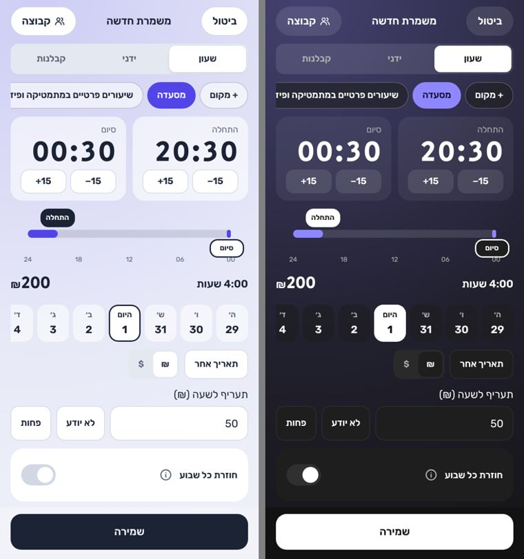
ברור ונקי. בפתיחה הפוקוס האוטומטי צובע את "עריכה" כאילו נבחר. במשמרת קבוצתית לא ברור מה המספר הראשי, ויש קיר של כפתורים. ב"מחיקה" הניגודיות 4.43.
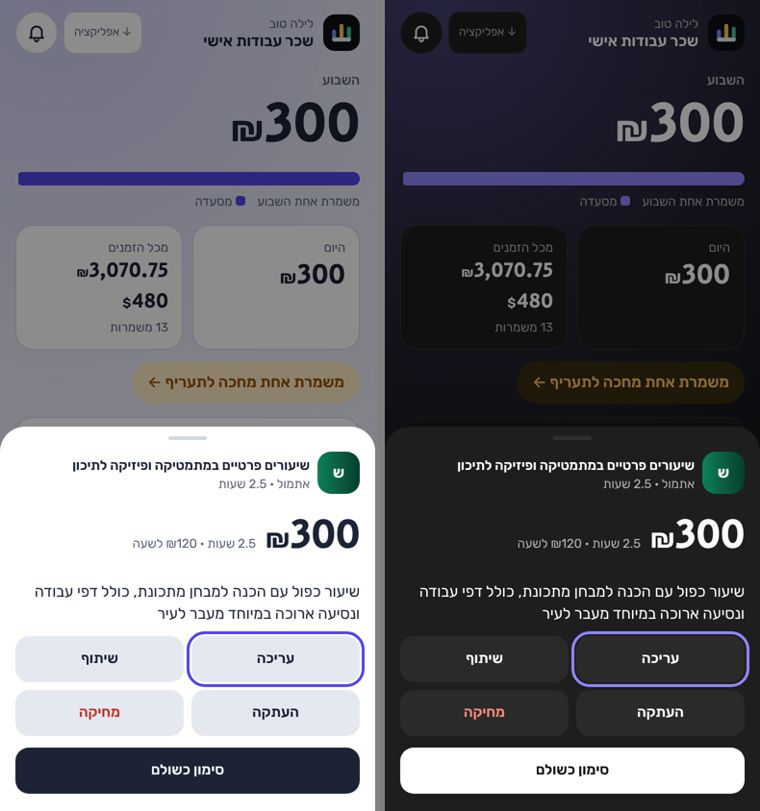
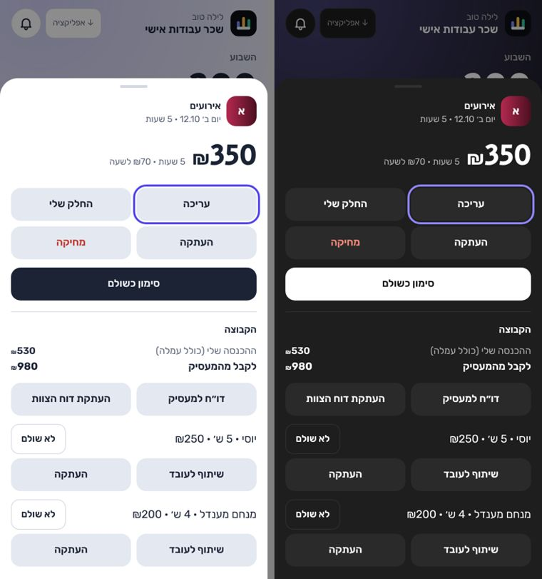
החלוקה לשבועות טובה, ו-400 משמרות מוצגות ב-363ms. אייקון ההעתקה בכותרת (שני ריבועים) לא מובן. בחיפוש שלושה כפתורי סגירה. בסינון שלושה סגנונות בחירה. סרגל הבחירה המרובה נחתך אופקית. ב-320px הכותרת נחתכת.
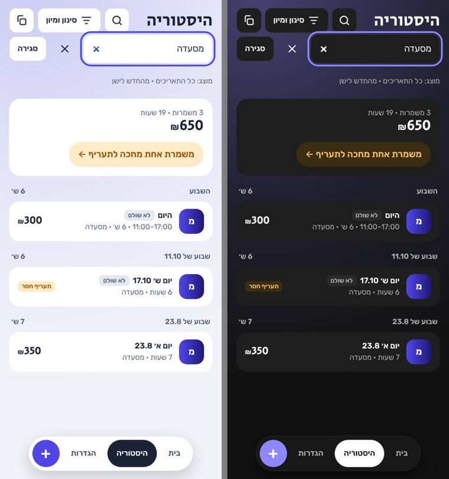
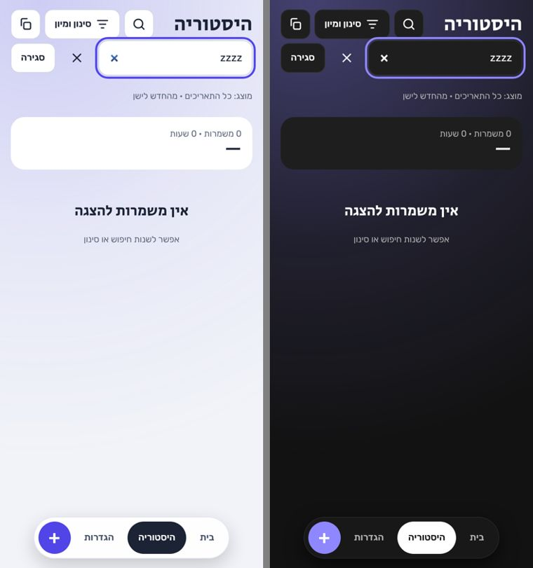
בווב: רשימה שטוחה עם נקודת מידע כמעט בכל שורה, וצ׳יפים כפעולות. "ייבוא" הוא הכפתור הראשי היחיד, ו"הורדת גיבוי" נשבר לשתי שורות. באנדרואיד 2.2.3 כבר מסודר בכרטיסי קטגוריה, וזה הכיוון הנכון שצריך להעביר לווב. גיליון המקומות חוזר על עצמו.
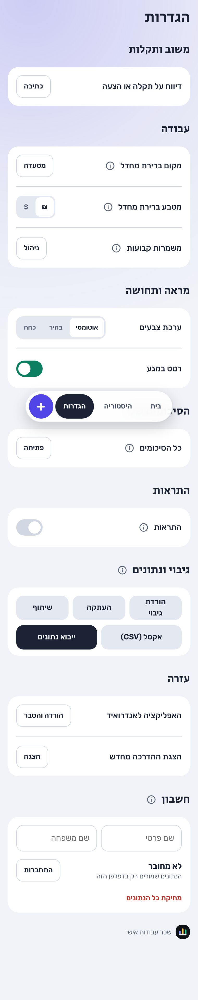
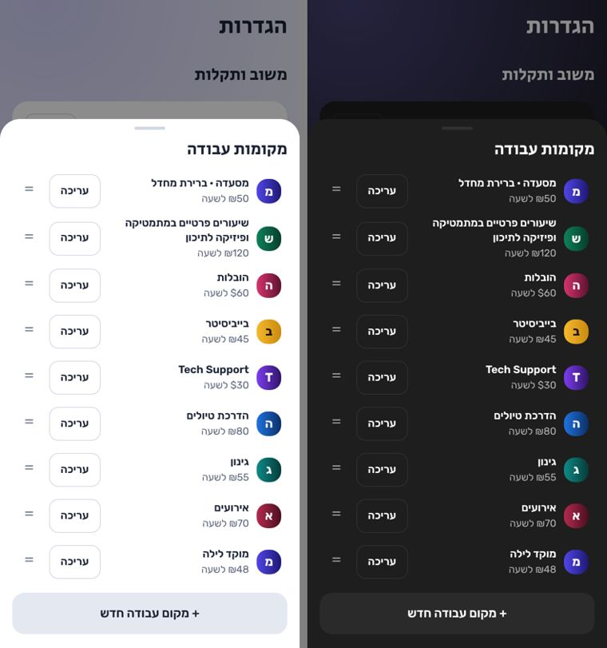
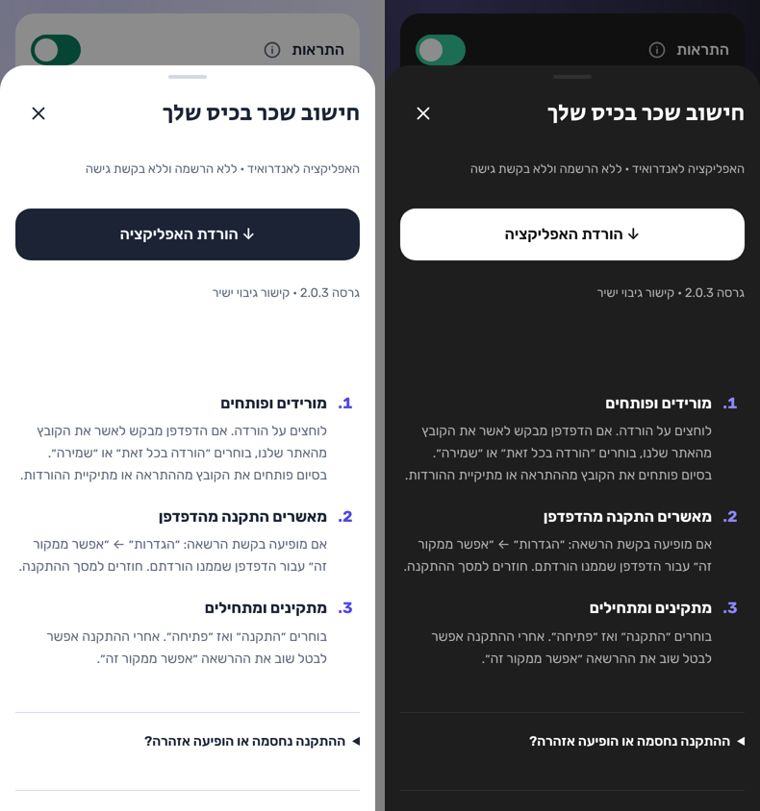
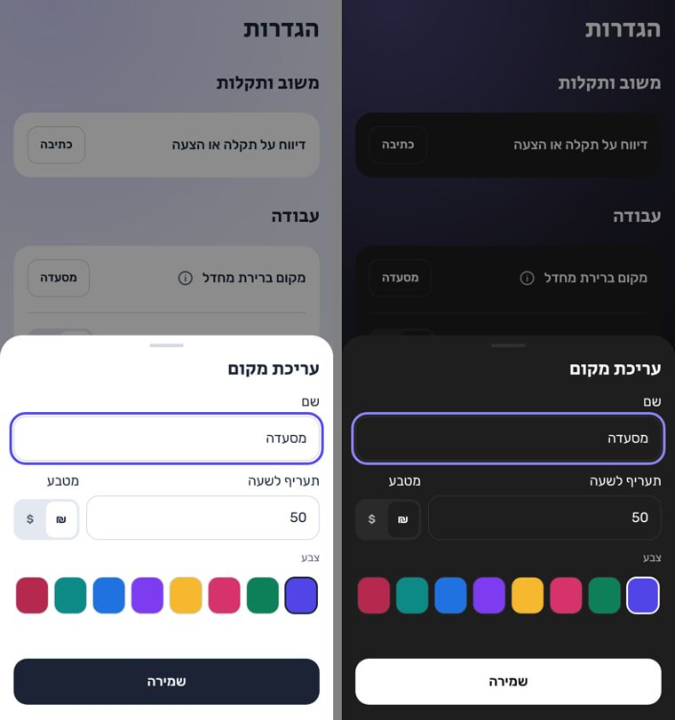
הפתיחה ("עיצוב חדש. התחלה חדשה.") חזקה. שלב השם חוסם המשך בלי שם. אפשר לדלג עם "אחר כך", אבל הכפתור "המשך" נראה מושבת ולא אומר מה חסר. כשאין מקום, הוספת משמרת פותחת קודם את גיליון המקום, וזה טוב, אבל בלי הסבר קצר.
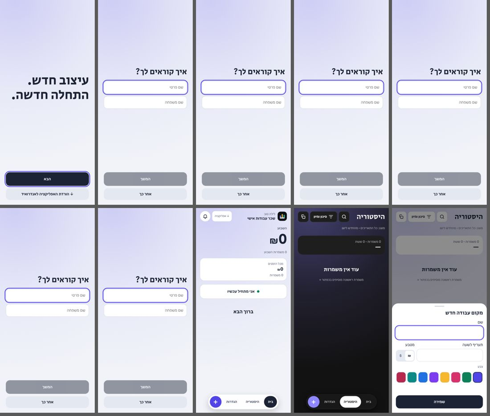
הרגע הכי "מהנה" במוצר, עם ניסוחים טובים. הוא מתקדם לבד בלי השהיה מהמקלדת ומתעלם מהפחתת תנועה. החצים קטנים. צריך לבדוק פער אפשרי במספר השעות.
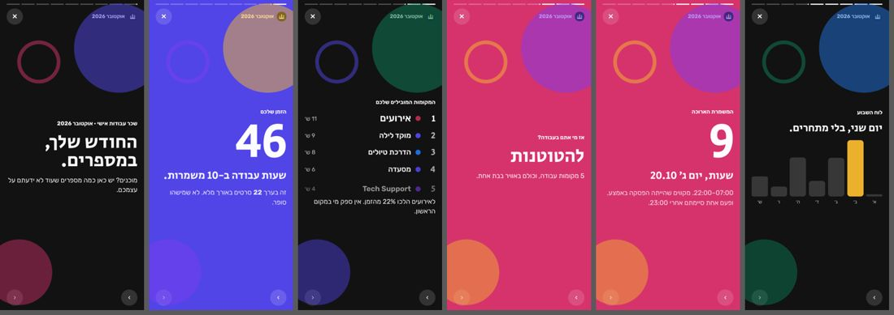
אין גלילה אופקית ב-768 וב-1440. בכל דף רוחב תוכן אחר, שם האפליקציה מופיע פעמיים, וההיסטוריה צרה.
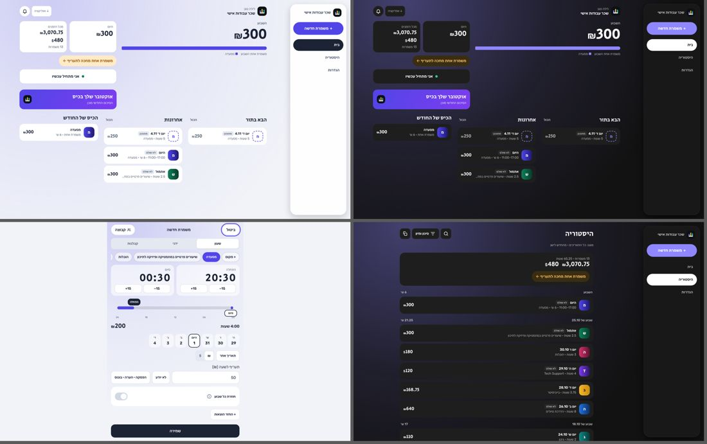
המבנה זהה לווב ברוב המסכים (ראו את צילום העיצוב מ-2.0.8). ייחודי לאנדרואיד: באג טווח שעות בשורות תכנון, ₪ ב-Secular One כשהכסף מוסתר, השעון החי ב-Rubik, כ-38 Toast של המערכת, חיתוך בגופן גדול, ומטרות מגע קטנות. הניתוח המלא (77 ממצאים) ב-ux-audit/notes/agent-android.md.
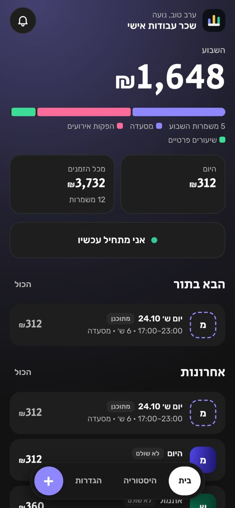
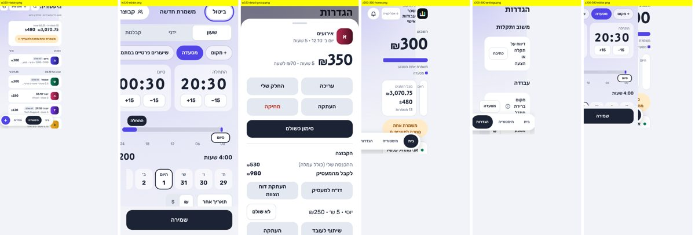
P0 קריטי · P1 לפני השחרור המאוחד · P2 חשוב · P3 שיפור. מאמץ: S עד חצי יום, M יום-יומיים, L שלושה עד חמישה ימים. "שניהם*" = אומת בווב, ובאנדרואיד לא נבדק בהרצה. הרשימה מאחדת את ממצאי המעבר הראשון שלי ואת ארבע הבדיקות המקצועיות (צבע, טיפוגרפיה, אנדרואיד, נגישות ושימושיות), בלי כפילויות. הממצאים הגולמיים המלאים (W, U, A) נמצאים בתיקייה ux-audit/notes/.
| מזהה | עדיפות | פלטפורמה | תחום | ממצא והמלצה | ראיה | מצב | מאמץ | השפעה |
|---|---|---|---|---|---|---|---|---|
| R-01 | P0 | שניהם* | קלט וערכים | ערכים משתנים בשקט בזמן הזנה הקלדת 25:00 נשמרת כ-20:00, ו-99:99 כ-9:09. סיום לפני התחלה נשמר כמשמרת של 23 שעות בלי שום סימון. סכום של ₪799,999.92 נשמר בלי בקשת אישור. אין הגבלת אורך להערות ולשמות מקום. (web/kis/editor.js; באנדרואיד לא נבדק בהרצה) | agent-web-ux U-07, צילומי web-err* | אומת (ווב) | M | גבוהה |
| R-02 | P1 | ווב | קלט וערכים | שגיאות לא מוכרזות ולא עקביות תעריף שלילי מציג סה״כ "₪-200". תעריף -5 בהתחלת משמרת חיה לא עושה כלום ולא מציג הודעה. ההודעה מבקשת לסמן "תעריף חסר", אבל על הכפתור כתוב "לא יודע". השגיאות לא מקושרות לשדה ולא מוכרזות לקורא מסך. | agent-web-ux U-06 | אומת | S | גבוהה |
| R-03 | P1 | שניהם | צבע / ערכות | המצב הכהה לא נראה כמו אותה זהות בבהיר כל האפורים נוטים לכחול-נייבי (גוון 263–269). בכהה הם אפור טהור (#121212/#1E1E1E/#2A2A2A, רוויה 0). בכהה sunk בהיר יותר מהכרטיס, כך ששדות ומילויים נראים מורמים במקום שקועים. הניווט בכהה (#181818) כהה מהכרטיסים ולכן נראה "מתחתם". KisTheme.kt:52-67, kis.css:9-33 | צילומי pairs/*, agent-color §2 | אומת | M | גבוהה |
| R-04 | P1 | שניהם | מערכת רכיבים | "נבחר" מצויר ב-11 דרכים שונות במסך העורך לבדו יש ארבעה סגנונות: צ׳יפ מקום מלא בצבע המקום, לשונית לבנה מורמת, יום לבן עם מסגרת כהה, מטבע לבן מורם. בכהה הסתירה בולטת עוד יותר: הלשונית הנבחרת בעורך לבנה, אבל המקטע הנבחר בגיליון הסינון כהה מהמסילה. KisKit.kt:188/223/241, KisEditor.kt:506/531/703, kis.css (--tab-on, --pick-*) | editor.jpg, filters.jpg | אומת | M | גבוהה |
| R-05 | P1 | שניהם | צבע / ערכות | כרטיס המשמרת החיה הופך במצב כהה למשטח לבן הרקע הוא c.ink, כלומר כהה בבהיר ולבן בכהה. זה סותר את ההערה בקוד עצמו ("never a white slab in dark mode"). נקודת ה"חי" על הכרטיס בניגודיות 1.77:1. KisHome.kt:251, web/home.js | live.jpg | אומת | S | גבוהה |
| R-06 | P1 | שניהם | צבע / ערכות | צבע המותג זהה לצבע של מקום עבודה #5145E8 הוא גם צבע המותג (כפתור +, הזוהר, טבעת הפוקוס, הודעות) וגם מקום העבודה הראשון (ΔE=0). מתג דולק משתמש בירוק "שולם" של כסף. פעולת ההודעה הקופצת אינדיגו בבהיר וחרדל בכהה. KisApp.kt:279/363, KisKit.kt:211, kis.css .switch | home.jpg, settings.jpg | אומת | M | גבוהה |
| R-07 | P1 | שניהם | נגישות / צבע | כשלי ניגודיות אדום על מילוי אפור 4.43. ירוק "שולם" על הרקע 4.48 ועל מילוי 4.05. לבן על מקום טורקיז 4.20. טקסט משני מתחת לזוהר 3.87. בכהה בווב: לבן על כפתור מחיקה 2.29, ה-+ בכפתור הוספה 2.97. קווי מתאר של כפתורים, שדות ומתג כבוי 1.26–1.43. | axe + agent-color נספח A | אומת (חישוב) | S | גבוהה |
| R-08 | P1 | שניהם | צבע / נתונים | צבעי מקומות העבודה קשים להבחנה אצל עיוורי צבעים: אינדיגו/סגול ΔE 1.4, ורד/בורדו בכהה 0.7. גם בראייה רגילה אינדיגו/סגול רק 6.2. המקום התשיעי חוזר לצבע של הראשון (מוקד לילה = מסעדה). המקום הירוק כמעט זהה לירוק "שולם" (2.4). | places.jpg, agent-color §3 | אומת | M | בינונית |
| R-09 | P1 | שניהם | טיפוגרפיה | ספרות ברוחב משתנה, ולכן סכומים ושעות "רוקדים" בווב אין tabular-nums בכלל. ל-Secular One אין tnum, כך ש-fontFeatureSettings="tnum" באנדרואיד לא עושה כלום (KisKit:117, KisEditor:584/630/829). השעון בעורך משנה רוחב תוך כדי הקלדה ועמודות הסכומים לא מיושרות. בכל סכום יש מעבר בין גופנים: ₪ ב-Rubik והספרות ב-Secular One. | agent-typography §1 | אומת (בדיקת קובץ גופן) | L | גבוהה |
| R-10 | P1 | שניהם | טיפוגרפיה | יותר מדי גדלים ומשקלים בווב יש 25 גדלים שונים בפועל, 8 מהם שבריים (11.78/13.64px), כי ₪ מוקטן ל-.62em. באנדרואיד יש 23 גדלים קשיחים בקוד ו-48 copy(fontSize). משקל 600 הוא 53% מכל הטקסט, ולכן ההדגשה מאבדת משמעות. היררכיית הכותרות שונה ממסך למסך. | census, agent-android A-20/21/22 | אומת | M | גבוהה |
| R-11 | P1 | ווב | התאמה בין הפלטפורמות | שינויי אנדרואיד 2.2.3 עדיין לא בווב השעון בכרטיס החי הפך לגדול והסכום לקטן; ההגדרות הפכו לכרטיסי קטגוריה עם עמוד לכל קטגוריה; חזר מתג ראשי עם 5 מתגים לפי סוג התראה. בווב עדיין: הסכום גדול, הגדרות כרשימה שטוחה, מתג התראות אחד. KisHome.kt:246, KisSettingsScreen.kt:84, KisInbox.kt:121 מול web/home.js:93, settings.js:5-19 | live.jpg, settings.jpg | אומת (קוד) | L | גבוהה |
| R-12 | P1 | אנדרואיד | RTL | טווח שעות מוצג הפוך בשורות תכנון timeLabel עוטף את הטווח בסימני כיוון (U+2066/2069), אבל PlannedCard ושורות המשמרות הקבועות בונים "${start}–${end}" בלי עטיפה. לכן ייתכן שיוצג "22:30–17:00" ליד כרטיס שמציג "17:00–22:30". KisPlan.kt:68,204 מול KisEditor.kt:937 | קוד (אומת בקריאה) | אומת בקוד, לא במכשיר | S | בינונית |
| R-13 | P1 | ווב | רספונסיביות | רוחב 320px נשבר (WCAG 1.4.10) ההיסטוריה נפרשת על 350px והכותרת נחתכת. בעורך "קבוצה", שעת הסיום והסכום חתוכים. ב-360px ומעלה אין גלילה אופקית. | w320.jpg | אומת | M | בינונית |
| R-14 | P1 | ווב | נגישות | ניהול פוקוס אין מלכודת פוקוס בגיליונות: Tab יוצא לדף שמאחור. בכל ציור מחדש הפוקוס נופל ל-body, כולל ברענון האוטומטי כל 60 שניות (app.js:132). בפתיחת גיליון או עורך במגע מופיעה מיד טבעת פוקוס עבה על הכפתור הראשון ("עריכה"/"ביטול"), שנראית כמו מצב "נבחר". | detail.jpg, editor.jpg, agent-web-ux U-02/U-03 | אומת | M | גבוהה |
| R-15 | P1 | ווב | נגישות / תנועה | הסיכום החודשי (story) מתקדם לבד הוא עובר שקופית כל 6 שניות, אין השהיה מהמקלדת, ההתקדמות ממשיכה גם כשמבוקשת הפחתת תנועה, והפוקוס אובד במעבר ובסגירה. באנדרואיד: לבדוק אם ההתנהגות זהה. | story.jpg, U-04 | אומת (ווב) | M | בינונית |
| R-16 | P1 | שניהם | נגישות | סמנטיקה לקוראי מסך ספרות השעה מוקראות בלי הערך ("התחלה · ספרה 1"). כפתורי סוג הרישום מסומנים role=tab עם aria-pressed. כרטיסי משמרת מוקראים ככפתור מתג. לגיליון פרטים אין שם. ידיות הגרירה הן span לא תפעולי. בסרגל השעות עובדים רק חצים. באנדרואיד חסרה סמנטיקה בסרגל, במקטעים, בסימון "שולם" לעובד ובגרירה. | axe, U-05/U-08..U-12, A-58.. | אומת | M | בינונית |
| R-17 | P1 | שניהם | נגישות / מגע | מטרות מגע קטנות בווב: ₪/$ 33–36×38, מקטעי ערכת צבעים 38 גובה, נקודות מידע 40×40, מתג 52×32, ±15 בגובה 36, חצי הסיכום. באנדרואיד: PendingFlag כ-33dp, "?" 32, ±15 36, לשוניות וצ׳יפים 38, InfoDot 40. | census, A-56, U-17 | אומת | M | בינונית |
| R-18 | P1 | שניהם | נגישות | הגדלת גופן באנדרואיד, בגופן גדול נחתכים שורת השעון החי, שורות המקומות (56dp קבוע), הסרגל והמספרים בסיכום. בווב כל הגדלים ב-px, כך שהגדרת גודל הגופן בדפדפן לא משפיעה בכלל. | A-55/57, U-14 | אומת (קוד/ווב) | M | בינונית |
| R-19 | P1 | ווב | שימושיות | שלושה כפתורי סגירה בחיפוש יש × של הדפדפן בתוך השדה (input type=search, בצבע כחול של הדפדפן), עוד × של האפליקציה, וגם "סגירה". history.js:75-76, ואין כלל ::-webkit-search-cancel-button. | search.jpg | אומת | S | בינונית |
| R-20 | P1 | שניהם | עקביות תוכן | משך זמן בשני פורמטים בעורך "4:00 שעות", אבל ברשימות ובסיכומים "2.5 שעות", "3.75 שעות", "65.25 שעות", "21.25 ש׳". מומלץ פורמט אחד, ש:דד, בכל מקום. | history.jpg, editor.jpg | אומת (ווב), סביר באנדרואיד | S | בינונית |
| R-21 | P1 | שניהם | משוב | משוב ואישור לא עקביים באנדרואיד כ-38 Toast של המערכת לצד ההודעה של האפליקציה, ושגיאות מוצגות ב-5 דרכים. בווב: ההודעה הקופצת כנראה לא מוכרזת, וכפתור הביטול בה נעלם אחרי 6 שניות. "סימון כשולם" לא נותן משוב. סימון כשולם לכמה משמרות יחד אין לו ביטול. "לא שולם" של עובד בקבוצה סוגר את כל הגיליון. | A-36/47, U-13 | אומת | M | בינונית |
| R-22 | P1 | ווב | תוכן | גרסה ישנה בגיליון הורדת האפליקציה כשהבדיקה לגרסה האחרונה נכשלת מוצג "גרסה 2.0.3 · קישור גיבוי ישיר", והקישור מוביל ל-APK של 2.0.3. השוואה: 2.2.1 פורסמה ו-2.2.3 מוכנה. web/kis/download.js:4,12,30 | android-sheet.jpg | אומת | S | בינונית |
| R-23 | P1 | שניהם | מערכת רכיבים | כפתור מחיקה שונה בין הפלטפורמות באנדרואיד מילוי רך (ובניגודיות 4.43 בלבד), בווב אדום מלא. בכהה בווב הניגודיות 2.29. KisKit.kt:148, kis.css:76 | A-26 | אומת | S | בינונית |
| R-24 | P1 | שניהם | מיקרוקופי | שלוש צורות פנייה ומונחים כפולים מעורבבות פנייה ביחיד ("הזן", "הוסף", "בחר"), ניסוח כללי ("מוסיפים", "לוחצים") ופנייה ברבים ("אתם", "סיימתם"). יש גם "נגיעה" במחשב, "דו״ח"/"דוח" באותו גיליון ו"ממתין"/"לא שולם". תאריכים בשלושה פורמטים: 4.11 / 04/11/2026 / 4.11.2026. | ed-job, ed-group, U-18/U-19 | אומת | M | בינונית |
| R-25 | P2 | שניהם | מערכת רכיבים | יותר מדי רדיוסים, גבהים ומסגרות בווב 12 רדיוסים בפועל, באנדרואיד 19–20 (2,3,6,7,8,9,10,12,14,16,18,20,22,24,26,99). באנדרואיד 7 גבהי כפתור. 4 סגנונות מסגרת לכרטיס. כרטיס ההגדרות 18 במקום אחד ו-20 במקום אחר. | census, A-25/29/30 | אומת | M | בינונית |
| R-26 | P2 | שניהם | אייקונים | אייקונים לא אחידים בווב: SVG בקו 2 לצד חצים וסימנים שהם תווי גופן (← ↓ ✓ ‹ ›) ב-Rubik, בעובי אחר. באנדרואיד שלושה סגנונות אייקונים. גם המפרידים לא אחידים: · ו-•. | קוד ui.js ICON, A-3x | אומת | S | בינונית |
| R-27 | P2 | שניהם | מערכת רכיבים | צ׳יפ של פעולה נראה כמו צ׳יפ בחירה בהגדרות "כתיבה", "ניהול", "פתיחה", "הצגה" ו"מסעדה" עוצבו כמו צ׳יפ סינון, כך שלא ברור אם זו פעולה או בחירה. | settings.jpg | אומת | S | נמוכה |
| R-28 | P2 | שניהם | מסך הבית | כפילויות ואיזון במסך הבית משמרת מתוכננת מופיעה גם ב"הבא בתור" וגם ב"אחרונות". כרטיס "היום" כמעט ריק ליד כרטיס "מכל הזמנים" עם שלוש שורות. הודעת "משמרת מחכה לתעריף" ברוחב חצי ומיושרת לימין, בזמן שכל השאר ברוחב מלא. | home.jpg, android-home.jpg | אומת | S | בינונית |
| R-29 | P2 | שניהם | פרטי משמרת | משמרת קבוצתית: לא ברור מה המספר הראשי הכותרת ₪350, מתחתיה "ההכנסה שלי ₪530" ו"לקבל מהמעסיק ₪980". יש קיר של 10 כפתורים (לכל עובד "לא שולם", "שיתוף" ו"העתקה"), ו"לא שולם" הוא סגנון כפתור נוסף (מתאר). | detail-group.jpg | אומת | M | בינונית |
| R-30 | P2 | ווב | הגדרות | הגדרות בווב נקודת מידע ליד כמעט כל שורה. "משוב ותקלות" ראשון. "הורדת גיבוי" נשבר לשתי שורות ב-390px. "ייבוא נתונים" הוא הכפתור הראשי היחיד בקבוצת הגיבוי, וזו הדגשה שגויה לפעולה רגישה. (באנדרואיד 2.2.3 המבנה כבר שונה, ראו R-11) | settings-full.jpg | אומת | S | בינונית |
| R-31 | P2 | שניהם | הגדרות | גיליון מקומות העבודה תשעה כפתורי "עריכה" זהים וידיות גרירה. עדיף שכל השורה תהיה לחיצה, עם גרירה נגישה (או כפתורי הזזה). | places.jpg | אומת | S | נמוכה |
| R-32 | P2 | שניהם | צבע | באנר הסיכום והזוהר בכהה רועשים מדי שיפוע הסגול בבאנר נשאר באותה בהירות גם בכהה, והוא האלמנט הכי צועק במסך. שקיפות הזוהר .40 בכהה פוגעת בניגודיות הכיתוב שמתחתיו. | home.jpg | סובייקטיבי + חישוב | S | בינונית |
| R-33 | P2 | שניהם | עורך | עורך המשמרת בסרגל השעות, משמרת לילה (20:30–00:30) מוצגת כשני מקטעים שקשה לקרוא. "קבוצה" ככפתור בכותרת לא מובן. צ׳יפי ההפסקה נחתכים. כ-40 עצירות Tab עד שדה התעריף. | editor.jpg, editor-modes.jpg | אומת | M | בינונית |
| R-34 | P2 | ווב | מצבים ריקים | מצבים ריקים כרטיס סיכום "0 משמרות • 0 שעות —" מופיע מעל הודעת "אין משמרות". גיליון ההעתקה מציע להעתיק 0 משמרות. מתג "רישום אוטומטי" מוצג כשאין אף משמרת קבועה. | search-empty.jpg, copy-empty.jpg | אומת | S | נמוכה |
| R-35 | P2 | ווב | מחשב | פריסה במחשב רוחב התוכן שונה מדף לדף: בית כ-1016px, היסטוריה 796px, עורך 560px. שם האפליקציה מופיע פעמיים. ההיסטוריה צרה ומשאירה הרבה חלל ריק. | desktop.jpg | אומת | M | נמוכה |
| R-36 | P2 | ווב | משוב | ההודעה הקופצת מופיעה באמצע המסך היא צפה מעל הרשימה ומסתירה תוכן, ופעולת "ביטול" בה בצבע המותג. | toast.jpg | אומת | S | נמוכה |
| R-37 | P2 | שניהם | ביצועים | גופנים כבדים בווב כ-1MB של TTF (ארבעה משקלי Rubik, Heebo ו-Secular One), בלי woff2 ובלי preload. Heebo נטען כגיבוי. באנדרואיד כ-900KB. | web/fonts | אומת | S | בינונית |
| R-38 | P2 | ווב | קוד → עיצוב | עיצוב בתוך הקוד עוקף את הטוקנים כ-130 תכונות style="" בקובצי ה-JS (editor 30, account 27, home 19, settings 18, history 14), למשל font-size:44px בגיליון הפרטים. טוקני הכהה כתובים פעמיים ב-kis.css, וזה סיכון שיתפצלו. | grep | אומת | M | בינונית |
| R-39 | P2 | אנדרואיד | טיפוגרפיה | ₪ מוצג ב-Secular One כשהכסף מוסתר בסיכום KisStory.kt:135 מציג "${currency}•••" בסגנון hero, וזה שובר את הכלל "₪ תמיד ב-Rubik". | קוד | אומת בקוד | S | נמוכה |
| R-40 | P2 | אנדרואיד | טיפוגרפיה | השעון החי (2.2.3) בגופן אחר משאר המספרים הגדולים הוא ב-Rubik 30sp, בזמן שכל מספר גדול אחר ב-Secular One (ובווב 40px). ייפתר ממילא עם R-09. KisHome.kt:259 | קוד | אומת בקוד | S | נמוכה |
| R-41 | P2 | שניהם | מצבים | מצב מושבת שונה בין הפלטפורמות שקיפות .38 באנדרואיד ו-.45 בווב. כפתור ראשי מושבת הופך למשטח אפור שנראה כמעט פעיל. | feedback.jpg | אומת | S | נמוכה |
| R-42 | P2 | ווב | רספונסיביות | זום 200% בטלפון סרגל הניווט רחב יותר מהמסך ומסתיר תוכן. | U-22 | אומת | S | נמוכה |
| R-43 | P2 | ווב | נתונים | לבדוק: מספר השעות בסיכום החודשי לא זהה בנתונים הסינתטיים כתוב בשקופית "46 שעות", ובשורת הסיכום של אותו חודש "49.25 שעות". ייתכן שזה הבדל מכוון בהגדרה (למשל משמרות קבוצה או מתוכננות). מומלץ ש-Codex יאמת. | story.jpg, recaps | לא ודאי | S | בינונית |
| R-44 | P3 | ווב | סיכום חודשי | חצים וסגירה קטנים בסיכום החודשי חצי "‹ ›" וכפתור הסגירה קטנים מ-44px. | story.jpg | אומת | S | נמוכה |
| R-45 | P3 | ווב | מקלדת | Escape בזמן הקלדת שעה מאבד את הפוקוס U-21 | U-21 | אומת | S | נמוכה |
| R-46 | P3 | אנדרואיד | קוד → עיצוב | שאריות טוקנים לא בשימוש (edit, editInk), רכיב מקטעים כפול, 8 עותקים של גיליון אישור, ו-setColor(0xFF5145E8) קשיח 5 פעמים בהתראות. | A-4x | אומת | S | נמוכה |
ההערכה הכוללת: כשלושה עד ארבעה שבועות של עבודה בשלבים, עם בדיקה שלך אחרי כל שלב. האומדן גס ותלוי בהיקף הבדיקות האוטומטיות.
✔ נבדק בפועל · ◐ חלקי (קוד או מסך בלבד) · ✘ לא ניתן בסביבה הזו. התו הראשון הוא ווב והשני אנדרואיד.
| תחום | ווב | אנדרואיד | מצב |
|---|---|---|---|
| מסך בית (מלא, ריק, משמרת חיה) | Playwright בהיר+כהה, 360/390/768/1440 | קוד + צילום עיצוב מ-2.0.8 | ✔ / ◐ |
| עורך משמרת: שעון, ידני, קבלנות, קבוצה, אפשרויות נוספות | Playwright, axe, מקלדת | קוד | ✔ / ◐ |
| הזנת שעה ומשך, ערכים חריגים | Playwright (25:00, 99:99, שלילי, 799,999) | קוד בלבד | ✔ / ◐ |
| פרטי משמרת: רגילה, קבוצה, בלי תעריף | Playwright בהיר+כהה, axe | קוד | ✔ / ◐ |
| היסטוריה: חיפוש, סינון, בחירה מרובה, העתקה, 400 משמרות | Playwright, axe, ביצועים (363ms ל-400 שורות) | קוד | ✔ / ◐ |
| הגדרות וגיליונות (מקומות, מקום, התראות, משוב, ייבוא, סיכומים, קבועות, מחיקה, הורדה) | Playwright בהיר+כהה, axe | קוד (מבנה 2.2.3 החדש) | ✔ / ◐ |
| התחלה ראשונה, הדרכה, מצבים ריקים | Playwright (שלב השם בלבד, הוא חוסם בלי שם) | קוד | ◐ / ◐ |
| סיכום חודשי (story) | Playwright, 6 שקופיות | קוד | ✔ / ◐ |
| שיתוף ל-Share Sheet, הורדת קבצים, העתקה ללוח | לא ניתן (אין תפריט שיתוף אמיתי בדפדפן אוטומטי) | לא ניתן | ✘ / ✘ |
| חשבון Google, סנכרון, ייבוא מקובץ אמיתי | Firebase חסום ברשת. לא נבדק בכוונה (לא נוגעים בחשבונות) | לא נבדק | ✘ / ✘ |
| התראות, עדכון אפליקציה, רטט | רק המסכים | קוד בלבד | ◐ / ◐ |
| קורא מסך אמיתי (NVDA/TalkBack) | שמות נגישים נבדקו בעץ הנגישות, לא בקורא מסך | לא ניתן | ◐ / ✘ |
| האתר החי | נבדק בתור הקודם (200, RTL, גופנים). בתור הזה נחסם שוב | — | ◐ |
| אמולטור או מכשיר אנדרואיד | — | אין SDK ואין KVM. צילומי CI חסומים (blob.core.windows.net) | ✘ |